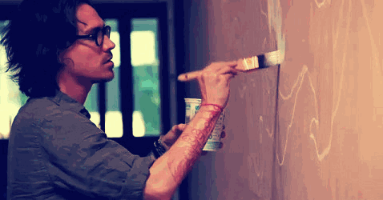
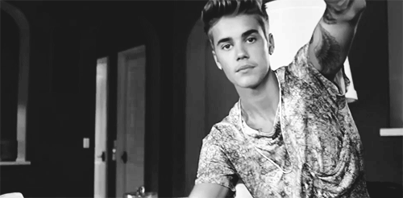
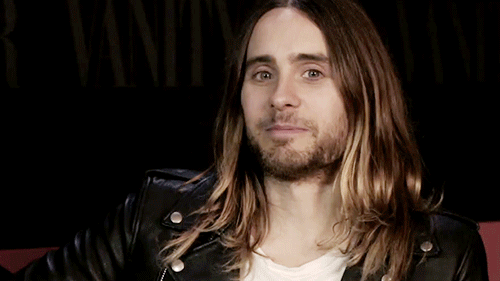
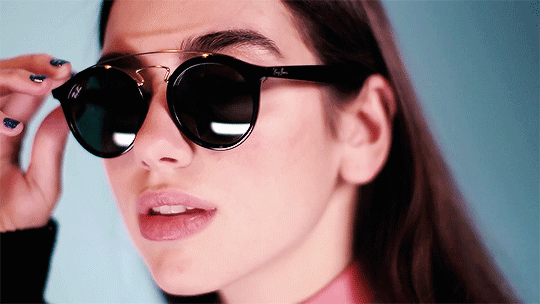
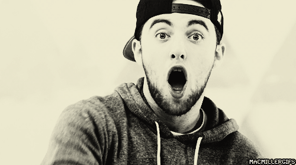

156 Likes
Estara presente el 12 de mayo en la inauguración de su exposición Optimystic, en Dallas-Texas. Explica que Optimystic, es un juego de palabras para hacer un recordatorio sobre cómo la mayoría de las cosas son una cuestión de percepción, y esa forma en que percibimos el mundo es un reflejo de nosotros mismos. De ahí la necesidad de introducir un poco de esperanza y magia en nuestras ideas. Un optimismo mezclado con algo más profundo. I am learning to code with #BreatheCode.
njeanp11 Link on my bio!!! 💯❤️
dazmare883 😘Hola bebe🐝
karitrista This story is great! ✨
Comment..

75 Likes
Justin Bieber se encuentra preparandose para la grabacion de su nuevo álbum. A pesar de haber cancelado el tan esperado "Purpose Tour" en 2017 para dedicarse a su espiritualidad, se presume que su nueva produccion viene cargada con un nuevo enfoque religioso. Esperamos que vuelva a los escenarios pronto. I am learning to code with #BreatheCode.
anhojunn 100 likes 😍🔥👏
lucasvin 100M❤️❤️❤️❤️
sel_m02100M 😂💘😂💘😂💘💘💘
Comment..

84 Likes
Criado junto a su madre y su hermano, la infancia bohemia de Leto se desarrolló por medio de varias comunidades hippies y a lo largo de los Estados Unidos. Comenzó estudiando artes en Filadelfia y después se pasó a los estudios audiovisuales en Nueva York. Allí escribiría y rodaría su primer cortometraje, Crying Joy. I am learning to code with #BreatheCode.
anhojunn 100 likes 😍🔥👏
zara67 this 📷 is amazing love it ✌️
jaredletofanmars I would say it's a new beginning for my wildest dreams 🙏😘❤
Comment..

86 Likes
La cantante británica Dua Lipa actuará en la ceremonia de presentación de la final de la Champions el próximo 26 de Mayo. Después, el Real Madrid y el Liverpool se enfrentarán en el último partido de la Liga de Campeones en el Olímpico de Kiev. I am learning to code with #BreatheCode.
arelyprado 😍😍😍
y3ralding Gorgeous!!! ❤😘
lulapenalva t amo 💙🌹
Comment..
98 Likes
Hasta el momento, Iggy Azalea ha publicado un álbum de estudio, dos mixtapes y dos álbumes de reproducción extendida. Se espera que este año publique su nuevo material discográfico, ‘Surviving the summer’. Actualmente, se encuentra en rehabilitacion para controlar los problemas de ira. I am learning to code with #BreatheCode.
diegoconde 😍😍😍😍😍
aly.vera My queen!!! Thank you for sharing your talents with the world 💘💘💘
fikarhmn 😁❤️👍😁❤️👍
Comment..

105 Likes
Mac Miller fue arrestado por chocar su auto mientras conducía bajo la influencia de sustancias y luego abandonó la escena. Su fianza fue valorada en 15.000 dólares. Además, los agentes que lo detuvieron, definieron a Mac como “la persona intoxicada más educada y buena” que habían visto nunca. I am learning to code with #BreatheCode.
steffgh 💙💙💙💙
soaresgj Nikes on my feet ✌🔥🔥
andrea78 My Life😍😍💍💘
Comment..